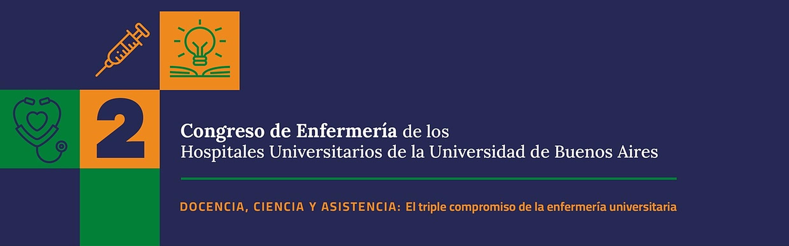

Organizan: APUBA (Secretaría Asistencial y Secretaría de Capacitación y Cultura), Hospital de Clínicas "José de San Martín", Instituto de Oncología "Ángel H. Roffo", Instituto de Tisioneumonología "Prof. Dr. Raúl Vacarezza", Instituto de Investigaciones Médicas "Dr. Alfredo Lanari", Instituto Superior FACULTAR y Dirección de la carrera de Enfermería de la Facultad de Medicina de la UBA.
Buenos Aires, octubre de 2026
Convocatoria
Invitamos a la comunidad de Enfermería de los Hospitales Universitarios de la UBA y de las instituciones educativas públicas y privadas afines a participar del 2.° Congreso de Enfermería de los Hospitales Universitarios de la Universidad de Buenos Aires.
El Congreso es un espacio de encuentro, intercambio y formación para que quienes integran el equipo de Enfermería compartan sus saberes, investigaciones y experiencias. Buscamos poner en valor el aporte de la profesión al cuidado, a la formación y a la producción de conocimiento basado en evidencia, y fortalecer su protagonismo dentro de la comunidad universitaria.
Ejes temáticos
- EJE01Transformaciones del cuidado y humanización. Atención integral, segura y centrada en las personas: modelos de cuidado, humanización, bioética, derechos del paciente y preservación del vínculo humano ante los cambios tecnológicos.
- EJE02Enfermería universitaria, formación e investigación. La Enfermería como disciplina científica: formación de grado y posgrado, educación continua, investigación, práctica basada en evidencia, simulación clínica y rol estratégico de los hospitales universitarios.
- EJE03Nuevos desafíos de la salud y el cuidado. Cambios epidemiológicos, demográficos y ambientales: envejecimiento, salud mental, cuidados paliativos, emergencias y vulnerabilidad social, con la Enfermería como articuladora comunitaria.
- EJE04Innovación, tecnologías e inteligencia artificial. Impacto de la IA y las tecnologías digitales en la práctica y la gestión (teleenfermería, historia clínica electrónica, ciberseguridad) y los límites de la automatización frente a la empatía y la presencia humana.
Actividades
La jornada incluirá:
- Ponencias centrales, a cargo de los hospitales e institutos universitarios, el Instituto Superior FACULTAR y la Facultad de Medicina de la UBA.
- Talleres prácticos simultáneos, organizados por cada institución.
- Presentación de pósteres de trabajos de investigación, reportes de caso y experiencias, enmarcados en los ejes temáticos.
Modalidades de participación


Ambas modalidades requieren inscripción previa.
Presentación de pósteres
Quienes participen como expositores/as pueden elegir entre dos opciones:
- Inscribirse ahora enviando el resumen y presentar el póster más adelante, dentro del plazo.
- Enviar el resumen y el póster juntos en una sola presentación.
El plazo máximo para presentar los pósteres es el domingo 18 de octubre de 2026.
Los pósteres deben elaborarse con la plantilla oficial del Congreso, disponible para descargar en: Plantilla de póster
El diseño debe garantizar una lectura ágil, visual y ordenada, e incluir los siguientes apartados:
- Encabezado: título del trabajo, autores/as, institución y eje temático.
- Introducción y objetivos: breve contextualización del problema y propósito del trabajo o experiencia.
- Metodología: diseño, población, ámbito de estudio o estrategia de intervención.
- Desarrollo / resultados: hallazgos principales, datos relevantes o ejes de la experiencia.
- Conclusiones / consideraciones finales: reflexiones, aportes a la práctica profesional y proyecciones.
- Referencias bibliográficas: citas principales (formato APA sugerido).
Los trabajos serán evaluados por el Comité Científico.
Inscripción y consultas
La inscripción, tanto para asistentes como para expositores/as, se realiza a través del formulario: INSCRIBITE ACÁ!
Fechas claves
| 18/10/2026 | Plazo máximo para presentar los pósteres |
| 18/11/2026 | Realización del Congreso |
Consultas: cehu.inscripciones@gmail.com
2.° Congreso de Enfermería de los Hospitales Universitarios de la UBA